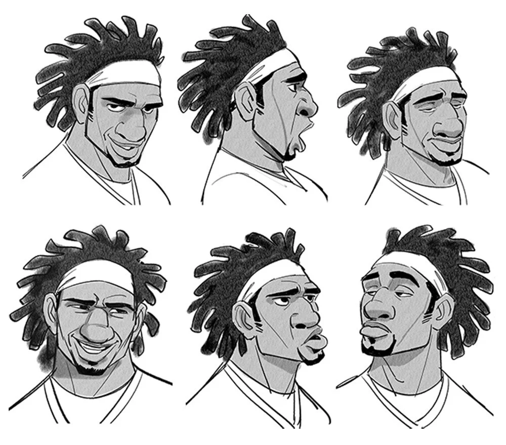
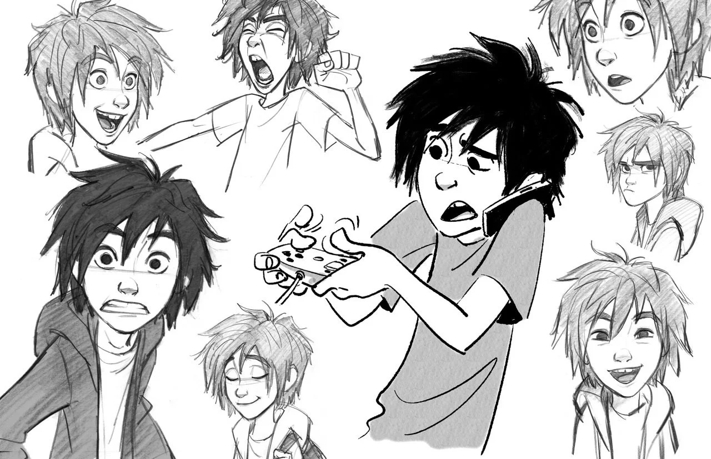
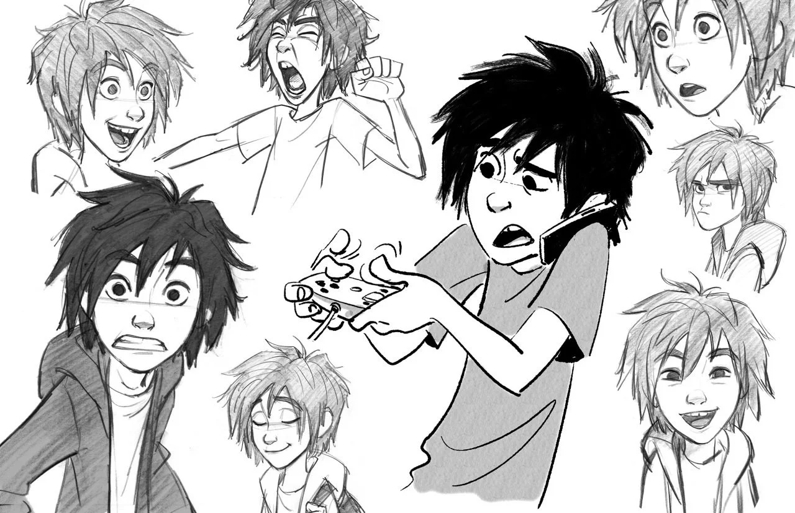
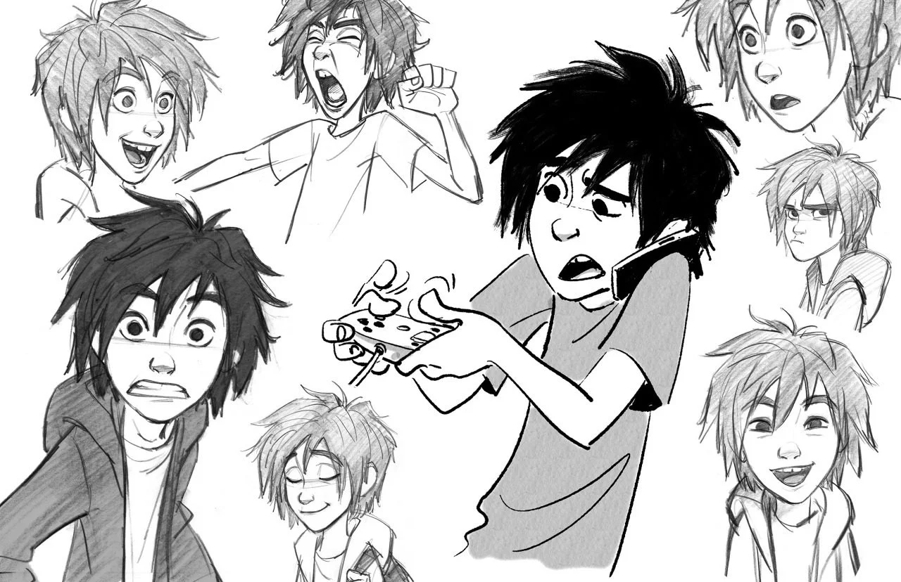

Hvad er Character art?

 


Karakter tegninger af Jin Kim, som var ansvarlig for af karakterdesign og animation for Disney fimen, Big Hero 6, fra 2014.
Character art eller karakterkunst refererer generelt til fiktive figurer, hvor det er karakterens fysiske udseende, personlighed, tøjstil og æstetik som kunstneren går mest op i at tegne. Karakterkunst ses typisk i form af konceptkunst inden for video- og animationsbranchen, hvor karaktererne spiller en central rolle i at fortælle en historie. Karakterdesignere arbejder på forskellige medieplatforme, hvor de skaber karakterkunst til animationsfilm, tegneserier, bøger, spil, reklamer eller til personligt brug som en hobby.